Neler oldu?
GÜNDEM HABERLERİ
1 / 6
![İş yaşamına katılan Y kuşağı ve Z kuşağı gençler işe başladıktan kısa bir süre sonra motivasyonlarını kaybediyor. 2500′den fazla Y kuşağı ve Z kuşağı katılımcıyla yapılan bir ankete göre, iş arayanların yaklaşık yüzde 72′si yeni bir işe başladıktan kısa bir süre sonra rolün veya şirketin beklediklerinden çok farklı olması karşısında şaşkınlık veya pişmanlık hissettiklerini dile getiriyor. İş arayanların yüzde 20’si ise henüz işe başlamadan istifa etme düşüncesine sahip olduklarını belirtiyor. Anket verilerini değerlendiren uluslararası eğitim platformu Laba’nın Türkiye Ülke Müdürü Elif Tuzlakoğlu, şirketleri çalışan odaklı işletmelere dönüşmeleri gerektiği konusunda uyarıyor.](img/istifa.jpg)
İş arayanlar daha işe başlamadan istifa etmeyi düşünüyor… Peki ama neden?
2 / 6
![Henüz Wi-Fi 6 yaygınlaşmadan geçen yılın ortalarından itibaren üreticilerin Wi-Fi 7 çalışmaları başlamıştı. Bu yıl da ardı ardına sektöre yön verecek yongalar tanıtılmaya başladı. MediaTek Filogic serisi bunlardan birisi. Wi-Fi 7, 2.4GHz, 5GHz ve 6GHz dahil olmak üzere mevcut tüm frekans bantlarında çalışacak. Teknoloji, aynı sayıda antenle bile Wi-Fi 6'dan 2.4 kat daha hızlı veri aktarımı sağlıyor. Wi-Fi 7 çok oyunculu AR/VR uygulamaları, bulut oyunları, 8K video akışı ve daha fazlası için hızlı veri aktarımı sağlayarak ev, ofis ve endüstriyel ağların belkemiği olacak.](img/wi-fi.jpg)
MediaTek; Wi-Fi 7 ve Bluetooth 5.3 yongalarını duyurdu!
3 / 6
![Yurt fiyatları 2022-2023 döneminde yüzde 100 zamlandı. Özellikle İstanbul’un bazı semtlerinde oda fiyatları aylık 4.500-12.500 TL arasında değişiyor. Öğrenciler yüksek kira fiyatlarının yanı sıra yüksek yurt fiyatlarıyla da karşı karşıya. 2022-2023 eğitim yılı yurt fiyatları öğrencilerin cebini yakıyor. Yüksek kiraların ardından erken rezervasyon yaptırmak isteyen öğrenciler yüzde 100 zamlı yurt fiyatlarıyla karşılaşıyor. Yurt fiyatları İstanbul’da aylık en düşük 4.500 TL’den başlayıp 12.500 TL’ye kadar yükselirken, yurt işletmecileri ise yükselen enflasyon, enerji ve personel maliyetlerini işaret ederek yüzde 100 zammın yeterli olmadığını ve hatta enflasyondan korunmak adına bazı kalemlerde de kısıtlamaya gidebileceklerini söylüyor.](img/yurtzammı.jpg)
İstanbul’da yurt fiyatları yüzde 100 zamlandı!
4 / 6
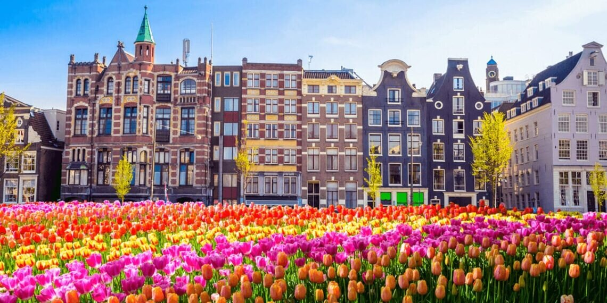
Yüksek kiralara karşı önerilen ‘Hollanda modeli’ nedir? Hollanda modelinin ayrıntıları!
5 / 6
![Apple, kısa süre önce iPhone’lar için kendin tamir et programını yurt dışında başlattı. Bu bağlamda kurulan altyapı ise herkesi şaşırtıyor. Apple, yıllardır gelen tamir odaklı birçok şikâyet sonrasında geçtiğimiz yıl beklenmedik bir adım atmış ve “Self Service Repair” programı ile karşımıza çıkmıştı. Bu program kapsamında iPhone 13 serisi, iPhone 12 serisi ve iPhone SE (3. Jenerasyon) sahibi kullanıcılar, Apple’ın resmen sağladığı parça, doküman ve araçlar ile kendi tamir işlemlerini evlerinde kendisi yapabilecek. Bu sayede bozulan ve çözümü kolay olan bir parça için Apple’a gidilmesine gerek kalmayacak, elektronik konusunda biraz bilgi sahibi olan hemen herkes kendi telefonunu tamir edebilecek. İleride sürece M1’li Mac bilgisayarlar gibi daha fazla cihaz dahil edeceklerini duyuran Apple, bu sistemi ilk olarak ABD için aktif etti. Peki süreç nasıl işliyor? İşte tam olarak bu noktada işler şaşırtıcı bir hal alıyor.](img/AppleTamiri.jpg)
Apple tarafının iPhone’lar için kendin tamir et programı çok ilginç çıktı!
6 / 6
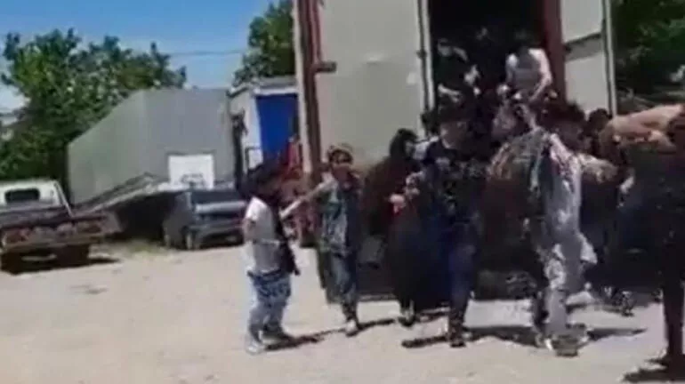
Kocaeli'de kamyon kasasından inip kaçmaya çalışan kaçak göçmenler görüntülendi:5'i çocuk 27 kişi yakalandı!
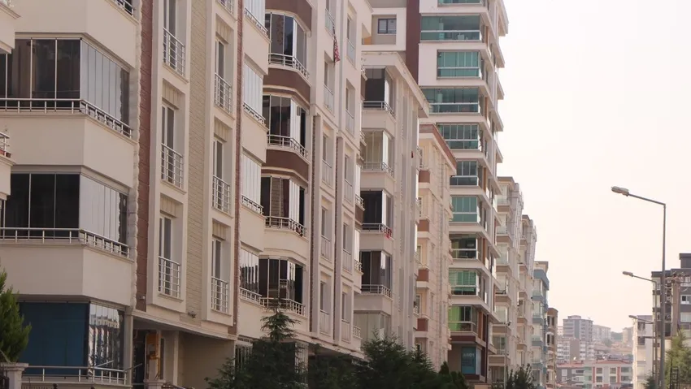
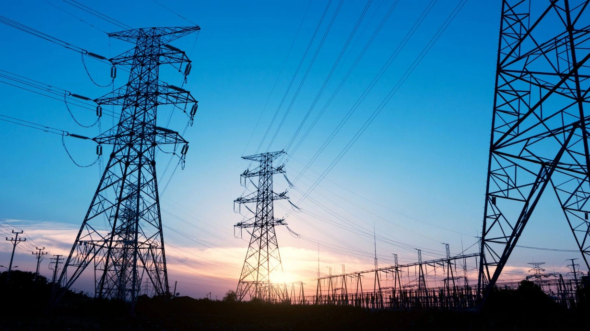
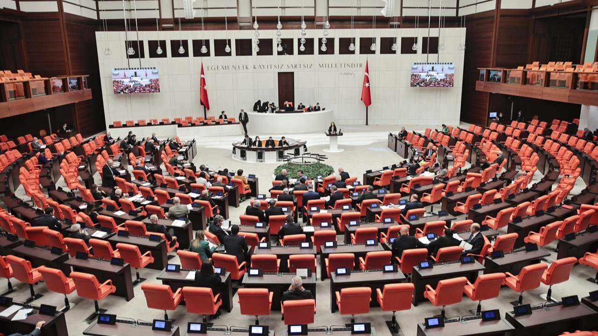
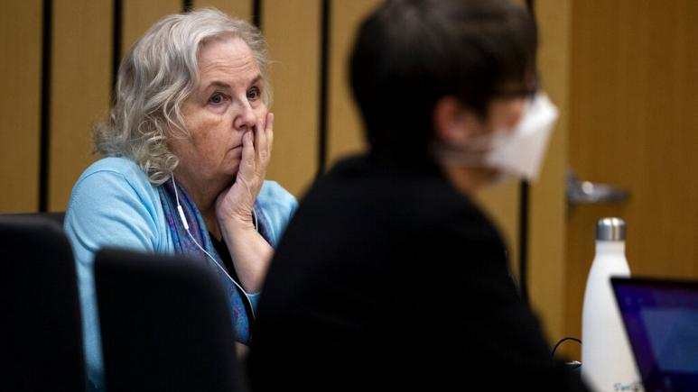
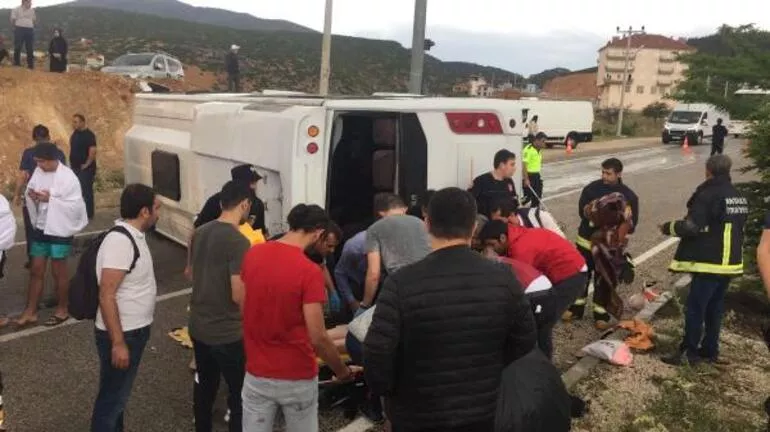
İstanbul'da ortalama kira bedeli 6 bin 360 lira!
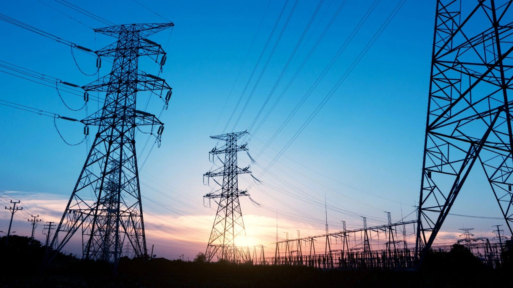
Isparta'daki elektrik kesintisi için rekor ceza!
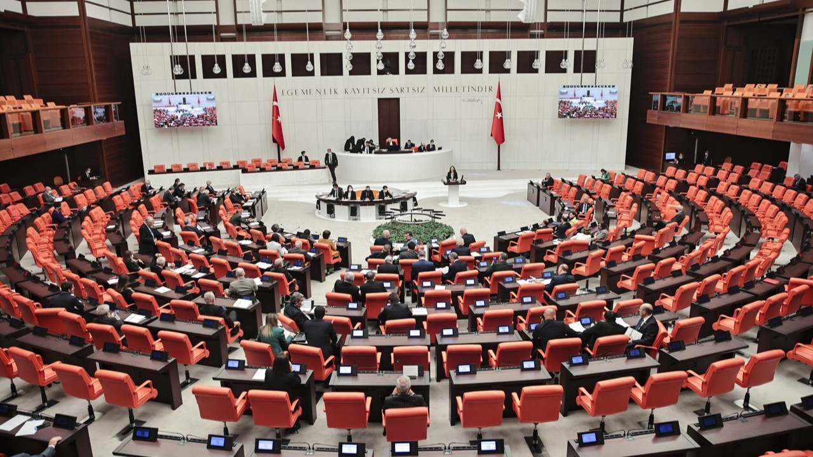
İnternetten yanıltıcı bilgi yaymaya 1 yıldan 3 yıla kadar hapis!
Ray Liotta öldü: Goodfellas filmiyle bilinen aktör 67 yaşında hayatını kaybetti!
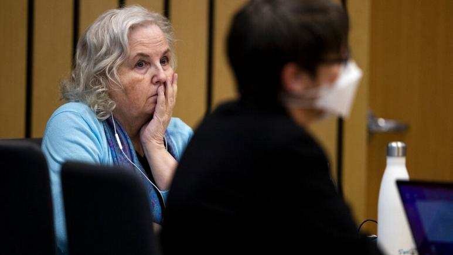
'Kocanı Nasıl Öldürürsün' kitabının yazarı Brophy, eşini öldürmekten suçlu bulundu!
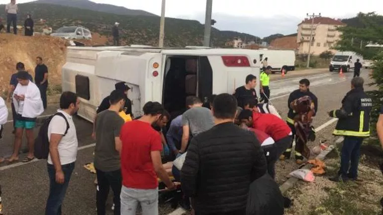
Antalya'da korkunç kaza! Turistleri taşıyan midibüs devrildi: 22 yaralı!
×